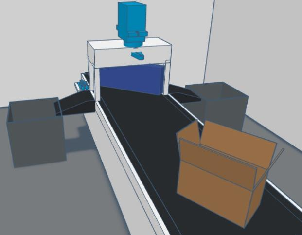
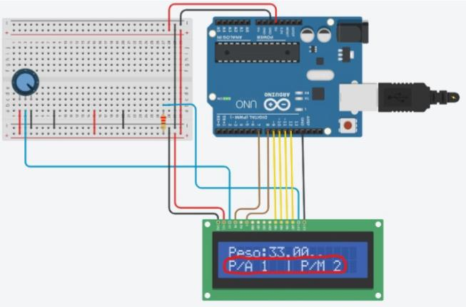
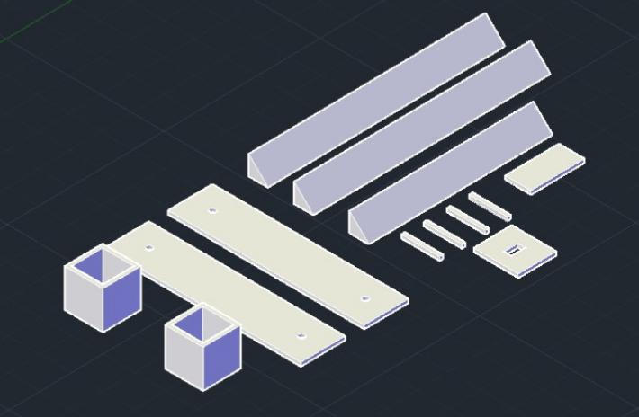
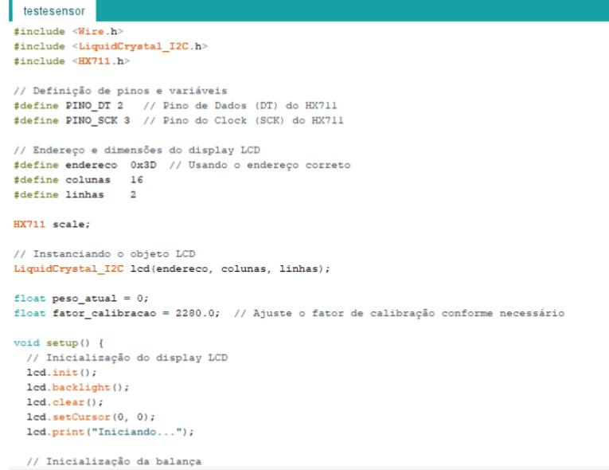

O projeto da Esteira Inteligente Conectada à IoT visa desenvolver uma solução tecnológica inovadora que integra automação e conectividade para otimizar processos logísticos e industriais. A esteira é equipada com sensores infravermelhos para detectar objetos e controlar sua movimentação automaticamente, garantindo maior precisão e segurança no transporte de itens. Servos são utilizados para manipular a direção ou posicionamento da esteira, aumentando a flexibilidade de uso em diferentes cenários de produção ou distribuição.
A conectividade IoT (Internet das Coisas) permite que a esteira seja monitorada e controlada remotamente, proporcionando maior eficiência operacional.
O sistema pode ser integrado a plataformas de gerenciamento de estoque ou sistemas ERP, permitindo a coleta de dados em tempo real sobre a performance, volume de itens transportados e possíveis interrupções no processo.
Além disso, com a integração de displays para exibir informações sobre os sensores e o estado da esteira, a supervisão se torna mais acessível e intuitiva.
A esteira também contribui para a automação do processo logístico,
facilitando o fluxo de trabalho e reduzindo a necessidade de intervenção manual, o que pode resultar em uma redução significativa de custos operacionais e aumento da produtividade.
A escalabilidade do projeto permite sua aplicação em diferentes indústrias, como armazéns, fábricas e centros de distribuição.
O projeto em si possui uma esteira de separação automática, este instrumento tem como objetivo separar certos produtos através do seu peso, atendendo uma lógica simples de realizar a separação através de um determinado peso, aferido e controlado através de um sensor de carga, sendo assim, a ação da esteira será da seguinte maneira: ⦁ Se um produto pesar abaixo de 50g, o braço de separação redirecionara o produto para o lado “Para Amanhã (P/A) ”. ⦁ Se o produto pesar acima de 50g, o braço de separação redirecionara o produto para o lado “Para Mês que Vem (P/M) “. O braço de separação é controlado através de um motor servo, em que ele controlara o braço de separação em que vai redirecionar o produto até ao destino, tudo isso sendo realizado e controlado pelo Arduíno, onde será o recurso principal do controle da esteira
Após o processo de separação, a esteira estará equipada com sensores infravermelhos, onde irão desempenhar de contabilização dos produtos separados, mostrando e informando os mesmos através de um display LCD, onde através dele será mostrado o peso, e a contabilidade dos produtos que foram separados, conforme mostra a imagem a seguir:
A equipe tem se reunido a respeito de como será feita a realização do projeto, logo, os integrantes do grupo tem se dividido em alguns setores para aprimorar o tempo de realização do projeto, sendo: documentação, montagem, apresentação, software e hardware. Após isso, a equipe de montagem tem discutido a respeito dos materiais necessários para a elaboração do protótipo, tendo em vista a facilidade de manuseio, tempo de fabricação e melhor condicionamento, perante a isso, o projeto terá como materiais principais: placas de madeiras de MDF e estruturas feitas com impressões em 3D. A equipe de hardware tem pensado nos componentes necessários para a execução de toda a parte autônoma e automática da empresa, como o uso de: sensores de carga e infravermelhos; motores DC; o Arduíno; display LCD; LED´s para a iluminação; motores servos e acessórios adicionais. No software, os integrantes têm se empenhado na realização do programa principal de todo o funcionamento da fábrica, desde o controle do motor servo de separação, contabilidade dos produtos, e sobretudo a funcionalidade geral da fábrica, utilizando o Arduíno como o “cérebro” de todo o projeto, configurando-o e realizando a programação através de softwares como o Arduíno IDE. As equipes de documentação e apresentação tem se juntado para que ambas possam desempenhar seus papéis no trabalho, sendo uma realizando o relatório técnico do projeto e uma elaborando a apresentação na fase final de todo o processo, todas as equipes têm sido excepcionalmente desempenhadas para que ambas elas possam se ajudar e chegar no patamar de conclusão.
A equipe de montagem tem trabalhado em muitas áreas para poder realizar o projeto com todo o seu planejamento, desde montar a estrutura da empresa até realizar a montagem e os primeiros inícios à esteira de separação, entretanto, a realização das peças para montagem foram todas projetadas e confeccionadas utilizando softwares disponibilizados pela instituição, dentre eles, o AutoCAD foi um dos softwares utilizados para a realização do corte no MDF utilizando máquinas de corte a laser, e também na produção de peças impressas na impressora 3D.
Na parte da programação, a equipe tem empenhado na parte lógica do projeto, colocando em prática tudo o que foi planejado e para executar de uma maneira totalmente autônoma, a seguir, uma ilustração irá registrar todo o processo de programação da esteira e do projeto em geral.
O projeto da esteira conectada à IoT destaca-se por sua importância no aprimoramento da automação e eficiência no controle de processos logísticos. Ao integrar a Internet das Coisas (IoT), a esteira permite monitoramento em tempo real e ajustes automáticos, otimizando o fluxo de materiais e reduzindo erros operacionais. Essa tecnologia oferece maior controle, economia de tempo e recursos, além de melhorar a produtividade em ambientes industriais e comerciais, tornando-se uma ferramenta estratégica para empresas que buscam modernizar suas operações e acompanhar as inovações tecnológicas.